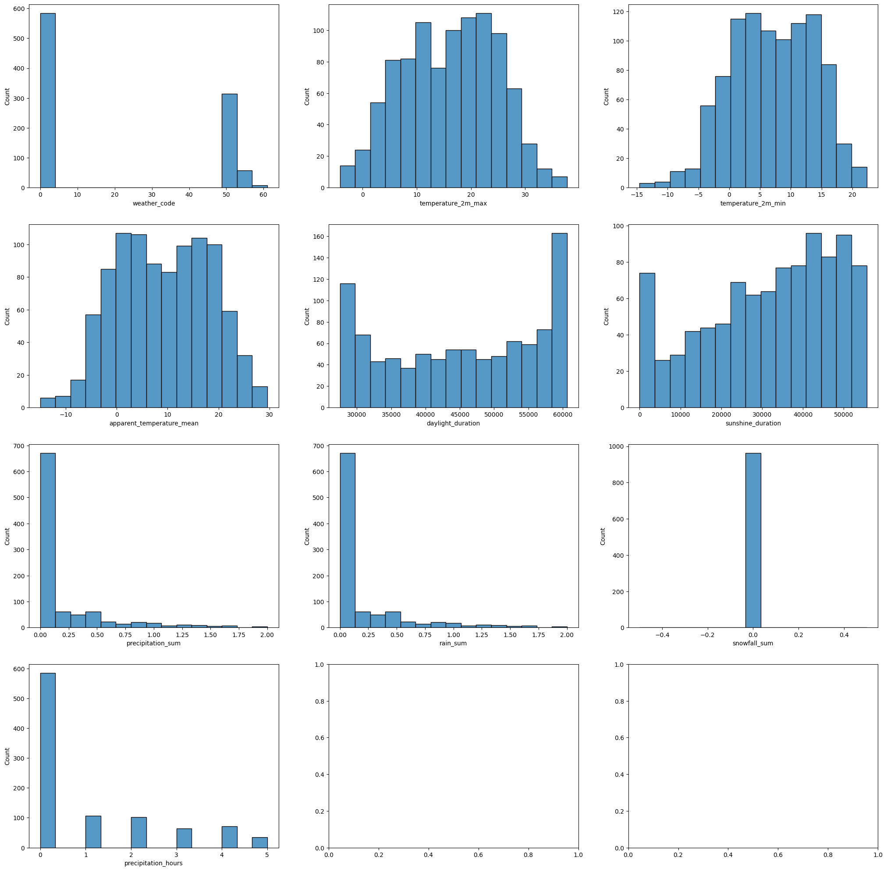
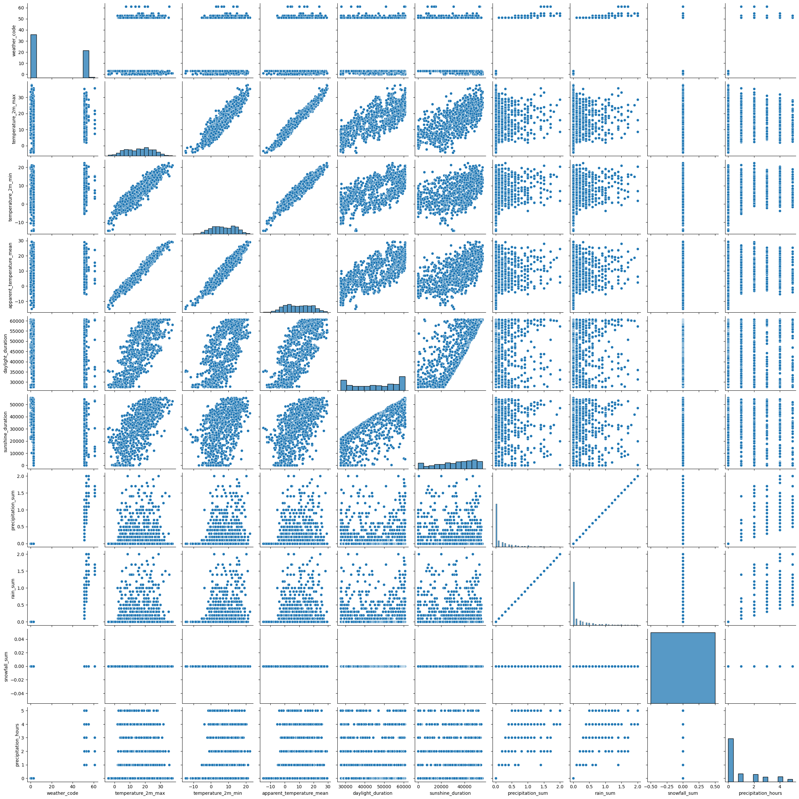
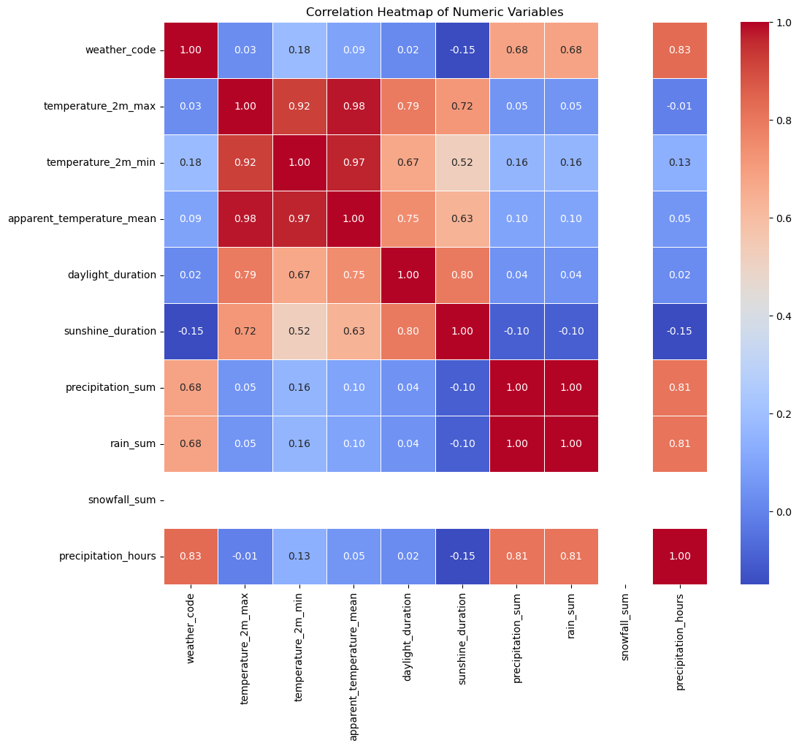
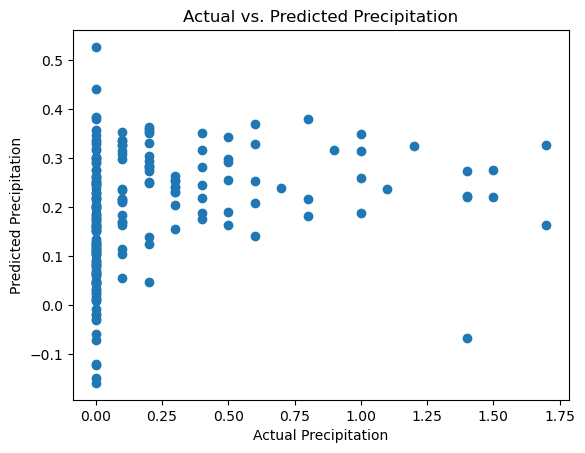
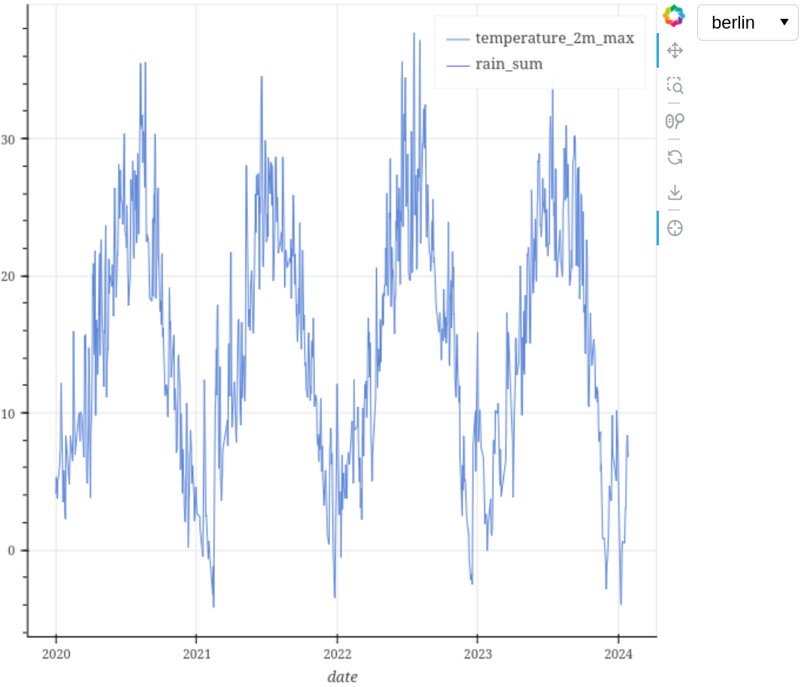
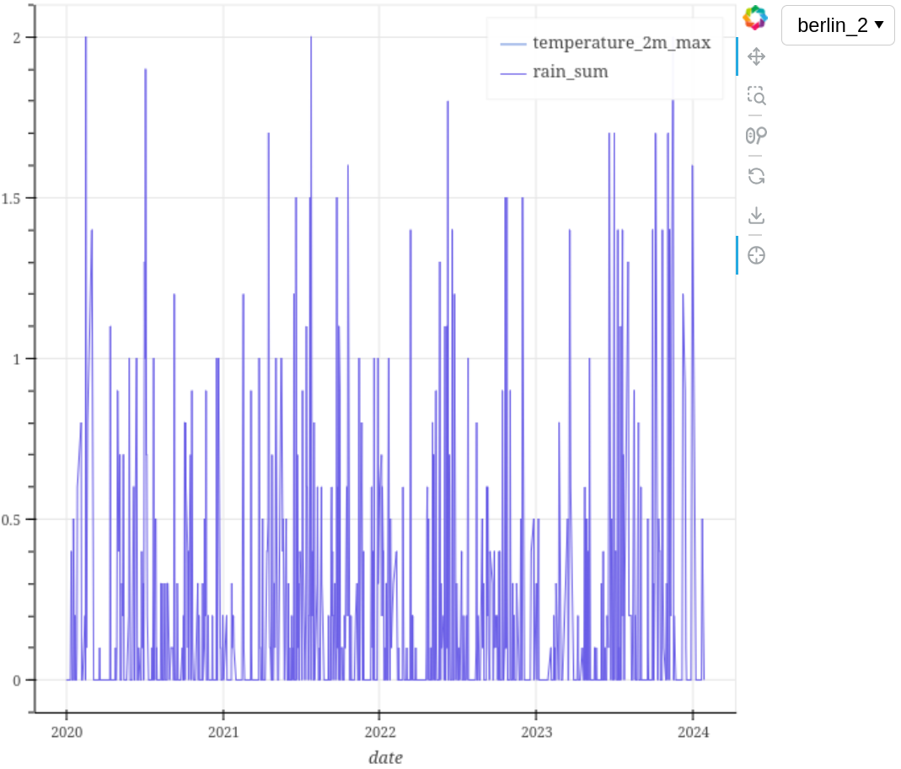

Example on how to use AnalysisTool & PlottingTool#
Importing tools#
# Using the pandas module is mandatory
import pandas as pd
from data_analysis_plotting_tools.AnalysisTool import AnalysisTool
from data_analysis_plotting_tools.PlottingTool import PlottingTool
Turn data sets into pandas DataFrames and preprocess them#
# Convert Berlin data set to pandas DataFrame
df_berlin = pd.read_csv('berlin_2020-01-01_2024-01-27.csv')
# Create object
df_name_berlin = 'berlin'
analysis_tool = AnalysisTool(df_name_berlin, df_berlin)
# Decide which columns NOT to use
columns_to_drop = ['Unnamed: 0',
'temperature_2m_mean',
'apparent_temperature_max',
'apparent_temperature_min',
'sunrise',
'sunset',
'wind_speed_10m_max',
'wind_gusts_10m_max',
'wind_direction_10m_dominant',
'shortwave_radiation_sum',
'et0_fao_evapotranspiration']
# Decide which columns to use
columns_to_check = ['weather_code',
'temperature_2m_max',
'temperature_2m_min',
'apparent_temperature_mean',
'daylight_duration',
'sunshine_duration',
'precipitation_sum',
'rain_sum',
'snowfall_sum',
'precipitation_hours']
# Preprocess the data set to be used for plotting later
analysis_tool.preprocess_data_set(columns_to_drop, columns_to_check, disable_feedback=True)
preprocessed_df = analysis_tool.get_data_frame()
print(preprocessed_df)
summary = analysis_tool.get_statistical_summary()
print(summary)
date weather_code temperature_2m_max temperature_2m_min \
0 2020-01-01 2.0 4.0585 -2.8915
1 2020-01-02 3.0 5.3085 -3.6915
4 2020-01-05 3.0 3.7585 -1.8415
5 2020-01-06 3.0 5.1085 0.7085
6 2020-01-07 3.0 5.1085 -1.2415
... ... ... ... ...
1480 2024-01-20 3.0 3.0585 -3.2415
1481 2024-01-21 3.0 3.0585 -4.7915
1483 2024-01-23 51.0 7.5585 2.5085
1485 2024-01-25 51.0 8.3585 4.4085
1487 2024-01-27 3.0 6.7585 1.2085
apparent_temperature_mean daylight_duration sunshine_duration \
0 -2.819745 27887.553 22130.1330
1 -4.523237 27961.896 22598.5250
4 -2.688207 28221.395 22702.1860
5 -0.102798 28319.473 0.0000
6 -1.173500 28423.040 3600.0000
... ... ... ...
1480 -5.091831 30236.890 18846.2600
1481 -6.437049 30411.797 2035.1797
1483 -0.621952 30773.158 15802.5350
1485 0.946923 31148.040 26011.0200
1487 -0.677743 31534.256 7207.6157
precipitation_sum rain_sum snowfall_sum precipitation_hours
0 0.0 0.0 0.0 0.0
1 0.0 0.0 0.0 0.0
4 0.0 0.0 0.0 0.0
5 0.0 0.0 0.0 0.0
6 0.0 0.0 0.0 0.0
... ... ... ... ...
1480 0.0 0.0 0.0 0.0
1481 0.0 0.0 0.0 0.0
1483 0.5 0.5 0.0 2.0
1485 0.2 0.2 0.0 2.0
1487 0.0 0.0 0.0 0.0
[963 rows x 11 columns]
date weather_code temperature_2m_max temperature_2m_min \
count 963 963.000000 963.000000 963.000000
unique 963 NaN NaN NaN
top 2020-01-01 NaN NaN NaN
freq 1 NaN NaN NaN
mean NaN 21.663551 16.035499 7.068002
std NaN 24.046408 8.660004 6.808220
min NaN 0.000000 -4.191500 -14.541500
25% NaN 3.000000 8.883501 1.958500
50% NaN 3.000000 16.508501 7.008500
75% NaN 51.000000 22.658500 12.683501
max NaN 61.000000 37.708500 22.308500
apparent_temperature_mean daylight_duration sunshine_duration \
count 963.000000 963.000000 963.000000
unique NaN NaN NaN
top NaN NaN NaN
freq NaN NaN NaN
mean 9.150490 45335.121341 31953.768855
std 9.040134 11174.289990 15907.667243
min -15.024669 27518.596000 0.000000
25% 1.876202 35060.343000 21500.764500
50% 9.109134 46072.094000 34625.380000
75% 16.458306 56002.898500 45205.894500
max 29.584272 60620.176000 55586.050000
precipitation_sum rain_sum snowfall_sum precipitation_hours
count 963.000000 963.000000 963.0 963.000000
unique NaN NaN NaN NaN
top NaN NaN NaN NaN
freq NaN NaN NaN NaN
mean 0.191900 0.191900 0.0 0.993769
std 0.360983 0.360983 0.0 1.486587
min 0.000000 0.000000 0.0 0.000000
25% 0.000000 0.000000 0.0 0.000000
50% 0.000000 0.000000 0.0 0.000000
75% 0.200000 0.200000 0.0 2.000000
max 2.000000 2.000000 0.0 5.000000
Plot preprocessed data sets#
# Create object
plotting_tool = PlottingTool()
# Add preprocessed pandas DataFrame from before
plotting_tool.add_data_set(df_name_berlin, preprocessed_df, disable_feedback=True)
# Add a second time for plotting
df_name_berlin_2 = df_name_berlin+'_2'
plotting_tool.add_data_set(df_name_berlin_2, preprocessed_df, disable_feedback=True)
## Plot added pandas DataFrames in various ways
plotting_tool.plot_interactive({
df_name_berlin: ['date', 'temperature_2m_max'],
df_name_berlin_2: ['date', 'rain_sum']})
plotting_tool.plot_univariate_graphs(df_name_berlin, number_columns_unvariate_graphs=3)
# In this example the columns used for plotting bivariate graphs
# are the same as the ones to keep
plotting_tool.plot_bivariate_graphs(df_name_berlin, numeric_variables=columns_to_check)
plotting_tool.plot_correlation_heatmap(df_name_berlin, numeric_variables=columns_to_check)
# Create a regression model
target_variable = 'precipitation_sum'
predictor_variables = ['temperature_2m_max',
'temperature_2m_min',
'daylight_duration']
regression_model_summary = plotting_tool.get_regression_model_summary(df_name_berlin, target_variable, predictor_variables, disable_feedback=True)
print(regression_model_summary)




OLS Regression Results
==============================================================================
Dep. Variable: precipitation_sum R-squared: 0.098
Model: OLS Adj. R-squared: 0.094
Method: Least Squares F-statistic: 27.69
Date: Wed, 27 Mar 2024 Prob (F-statistic): 5.21e-17
Time: 12:08:04 Log-Likelihood: -263.90
No. Observations: 770 AIC: 535.8
Df Residuals: 766 BIC: 554.4
Df Model: 3
Covariance Type: nonrobust
======================================================================================
coef std err t P>|t| [0.025 0.975]
--------------------------------------------------------------------------------------
const 0.2464 0.059 4.189 0.000 0.131 0.362
temperature_2m_max -0.0347 0.005 -7.488 0.000 -0.044 -0.026
temperature_2m_min 0.0438 0.005 9.059 0.000 0.034 0.053
daylight_duration 4.189e-06 1.88e-06 2.232 0.026 5.05e-07 7.87e-06
==============================================================================
Omnibus: 393.491 Durbin-Watson: 1.990
Prob(Omnibus): 0.000 Jarque-Bera (JB): 2061.167
Skew: 2.369 Prob(JB): 0.00
Kurtosis: 9.465 Cond. No. 2.22e+05
==============================================================================
Notes:
[1] Standard Errors assume that the covariance matrix of the errors is correctly specified.
[2] The condition number is large, 2.22e+05. This might indicate that there are
strong multicollinearity or other numerical problems.
Bokeh opens in browser#
 